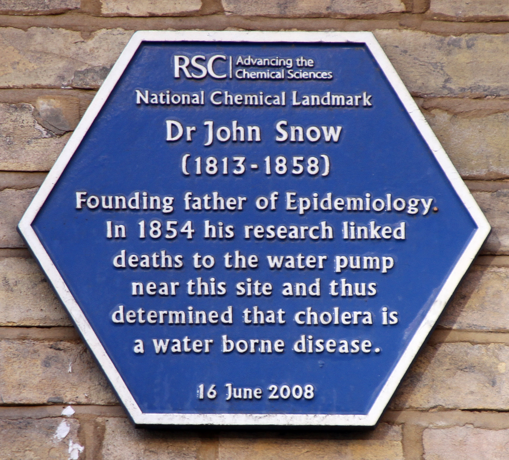

11 Differences-in-differences
11.1 Introduction
In this final chapter, we’ll learn about one more causal inference research design: the diff-in-diff estimator.
To quickly review, if you want to find how much some variable X effects another variable Y, running an RCT (randomized controlled trial) is the gold standard. The problem is that an RCT is often unethical and expensive, especially for many of the questions we’re interested in researching as economists. For example, learning about the returns to education through an RCT would mean collecting a group of children and randomizing how much education they get to have, and then observing their earnings throughout their life.
An alternative research design is to use instrumental variables: if a valid instrument exists, a natural experiment happened. What’s difficult about IV is that oftentimes, no valid instrument exists.
So in this final chapter, we’ll discuss one more alternative: diff-in-diff. The special thing about this estimator is that we don’t need strict exogeneity in order to get an unbiased estimator; we only need panel data and the parallel trends assumption.
11.2 Panel Data
Recall chapter 7 when we began studying time series. We learned that our focus for the first 6 chapters was on cross-sectional data, where we sampled many subjects at one time. For example, when you take a large group of people and ask them about their earnings, years of education, their sex, their race, and whether they are married, that builds a cross-sectional dataset.
Time series, on the other hand, observes one subject across time. So if you have data about the US (like gas prices in the US and the presidential approval rating) over a period of time, that’s a time series.
The third and final type of data we’ll discuss in this class is panel data, where you observe many subjects across time. We’ve actually been working with a panel dataset since the beginning of the class: it’s gapminder. The gapminder dataset has 142 subjects (countries) and makes observations about those countries in 12 different years.
11.3 Dr. John Snow
Dr. John Snow invented the diff-in-diff estimator in 1855 to prove that cholera spreads not through air, but through water. That was 85 years before RCT’s were invented.


11.4 References
Cunningham (2021) Causal Inference: the Mixtape